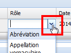

Typage du rôle des relations d'équivalence entre Termes
ProcédureTyper la relation d'équivalence entre les Termes d'un Concept⚓
RéglementaireProcédure optionnelle⚓
Cette procédure n'est pas obligatoire. Si aucun rôle n'est défini, alors la relation d'équivalence par défaut Employer / Employé pour (EM/EP) s'applique.
Cliquez dans la case
Rôlede la ligne duTermedont vous souhaitez typer la relation d'équivalence.Un menu déroulant s'affiche.

Sélectionnez le rôle de votre choix.
RemarqueRemarque⚓
La liste des valeurs est paramétrable par l'administrateur de l'application, en fonction des besoins.
Cliquez sur

Enregistrerpour sauvegarder les modifications apportées auConcept.